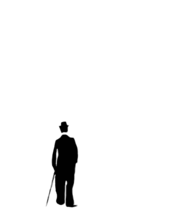

If I Met an Alien
 One day I was at home sitting on the couch and I heard the doorbell ring. I looked out the window to see who was there and I did not see anybody so I sat back down. Then the doorbell rang again so I opened the door. I saw a tiny car with antennas coming out. "Hello", I said. I heard someone say "me-me". I got a little nervous so i said hello again but this time it said "La-La-La", so I said please come out. A tiny creature came out. It was green, shiny, and sort of cute. I said "Who are you"? Then a robot came out of the car and said "THIS-IS-AN-ALIEN". I quick went back inside and shut the door. Then I thought about meeting an alien. I was curious so, I went back outside and the alien said "He-llo, who are you"? There was a moment of silence. The alien said "Be-bop is my name". I said my name is Sarah. "Hi Be-bop", I said. Then I heard my mom's voice say, "Sarah, time to wake up". Finally, I woke up and I realized that it was all a dream, a good dream!
One day I was at home sitting on the couch and I heard the doorbell ring. I looked out the window to see who was there and I did not see anybody so I sat back down. Then the doorbell rang again so I opened the door. I saw a tiny car with antennas coming out. "Hello", I said. I heard someone say "me-me". I got a little nervous so i said hello again but this time it said "La-La-La", so I said please come out. A tiny creature came out. It was green, shiny, and sort of cute. I said "Who are you"? Then a robot came out of the car and said "THIS-IS-AN-ALIEN". I quick went back inside and shut the door. Then I thought about meeting an alien. I was curious so, I went back outside and the alien said "He-llo, who are you"? There was a moment of silence. The alien said "Be-bop is my name". I said my name is Sarah. "Hi Be-bop", I said. Then I heard my mom's voice say, "Sarah, time to wake up". Finally, I woke up and I realized that it was all a dream, a good dream!
CHARLIE CHAPLIN

Charlie Chaplin was an English comic actor, filmmaker, and composer who rose to fame in the silent era. He is mostly famous for his screen persona "the tramp". Born on April 16, 1889 in London, Chaplin is considered one of the most important figures in the history of the film industry. He had been a productive and creative film maker for about 75 years before he died in 1977.
Early life
Chaplin suffered from poverty and hardship in his childhood. He was sent to a workhouse twice before the age of nine. His mother struggled financially when his father was absent. When he was 14, his mother was sent to a mental asylum.
Career
Chaplin's first performances were at music halls as a stage actor and comedian at the age of 19. He went to the USA where he was scouted for the film industry, and began appearing in 1914 for Keystone Studios. He soon developed the Tramp persona and formed a large fan base. Chaplin directed his own films from an early stage, and continued to hone his craft.. By 1918, he was one of the best known figures in the film industry.
Chaplin wrote, directed, produced, edited, starred in, and composed the music for most of his films. He was a perfectionist, and his financial independence enabled him to spend years on the development and production of a picture.
In 1919, Chaplin co-founded the distribution company United Artists, which gave him complete control over his films. His first feature-length was: